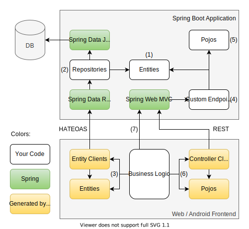

Introduction
FeGen helps you write web and mobile apps with Spring Boot backends. It does so by generating client code based on your Spring server, so you can access your Spring Data REST API in a type safe manner. Typescript and Kotlin are supported as frontend languages, so you can use FeGen when creating a web app, a native Android app or another Spring application.
Idea
With Spring Data Rest it is already very convenient to create a REST API to persist data by just specifying the data model using entities like this one:
@Entity
public class Country {
public long id;
public String name;
public int population;
@OneToMany(mappedBy = "country")
public List<City> cities;
}
You just need to specify matching repositories, and Spring Data Rest will provide you with a HATEOAS API that supports all CRUD operations:
public interface CountryRepository extends JpaRepository<Country, Long> {}
If you want to e.g. create a new country from within a web application, you can now use the following code:
const counrty = await fetch("http://example.com/countries", {
method: "POST",
body: {
name: "Germany",
population: 80_000_000,
cities: []
}
});
However, creating REST requests that conform to the HATEOAS that Spring expects can be quite cumbersome. This is how you would add a city to a country:
fetch("http://example.com/cities", {
method: "POST",
body: {
name: "Dortmund",
population: 600_000,
counrty: counrty._links.self.href
}
})
Although HATEOAS is not overly complicated, it is easy to make a mistake e.g. by misspelling the URL or a property name, using the wrong method or supplying an object as a related entity instead of a link. Also, if you change your API later on, you will have to manually check for all the places in your frontend where you have used it.
This is where FeGen comes into play. You can add it to your Spring Boot project, and it will look at the entities and repositories you defined and generate frontend code in Typescript or Kotlin so you can access your API without worrying about the HATEOAS details:
const country = await apiClient.countryClient.create({
name: "germany",
population: 80_000_000,
cities: []
});
apiClient.cityClient.create({
name: "Dortmund",
population: 600_000,
country
});
As you can see, this has multiple advantages:
- You do not need to know how HATEOAS works
- Generated types for entities prevent mistakes and give you auto completion
- When you change your API, obsolete usages in your frontend will cause compiler errors, so you can easily spot and fix them
- The code is more readable as it better conveys its intent
- Less boilerplate code
As with Spring and Spring Data REST, with FeGen, you are not constrained to simple CRUD operations. You can use paging, sorting, custom searches and projections to access your data. Moreover, FeGen also generates code to access the methods within controllers.
Architecture
This is how a full stack application using FeGen may be structured:

In the simplest case, you can just define some entities (1) as well as the corresponding repositories (2) and FeGen enables you to read and modify those entities from within your frontend code (3) as in the code examples you just saw. If you need more fine-grained control, you can also define your own endpoints in a Spring controller (4) which may use entities or plain java classes that you defined (5) and FeGen will generate corresponding types and methods to invoke those endpoints (6). Finally, if you need to access an endpoint in a way that FeGen does not currently support (such as file up- or download), you can of course always directly access your Spring server from your frontend (7).
Getting started
If you are new to FeGen, please follow the Quick Start Guide to get an idea of how FeGen works and how you can use it. Once you finished the Quick Start Guide, you can go more into detail and e.g. learn how to use FeGen to access your backend from Android or another Spring application, by referring to the Reference Documentation.
Quick Start Guide
On the following pages you will learn how to create a simple web application using Spring, FeGen and Typescript. It will allow you to create, view, edit and delete items from a todo list. This guide is recommended even if you use case differs, e.g. because you want to use Kotlin in the backend or want to generate code for a Kotlin client like an Android app or another spring application.
Prerequisites
In order to follow this guide, you will need to have a basic understanding of Java, Spring Boot and Typescript.
You will also need to have Node.js installed to create the frontend. Go to https://nodejs.org/ in order to download and install Node.js for your operating system, if you haven't already.
Setup
In this step you will initialize your backend and frontend project and configure them to use FeGen.
The first thing you should do is create a directory for your project.
mkdir todo-app
Creating the backend
To create the web server for your application, you can use the spring initializr.
Go to https://start.spring.io/.
Select the Gradle Project and Java radio buttons, change the artifact metadata to backend (The name will automaticaly change as well) and choose Java 14 or above.
FeGen also supports Maven and Kotlin, but they are not used in this guide in order to keep it simple. If you want to know how to configure FeGen with Maven, refer to the Maven page of the reference documentation.
To use your Spring Boot application as a backend for your web application, you will need to add the following dependencies using the button in the top right:
Spring Web- to allow your website to communicate with the backend using REST
H2 Database- or another SQL database like PostgreSQL to store data in
Spring Data JPA- to simplify accessing the database from your backend code by creating entities
Rest Repositories- for your website to be able to directly access your database to via REST
Spring Security
After adding those, click the Generate button and download the zip file.
Extract the contained backend directory into the todo-app directory you created earlier, so your directory structure looks as follows:
todo-app/
└── backend/
├── build.gradle
├── gradle
...
Adding FeGen to the backend
In order to generate the client for your backend, you need to add the FeGen plugin to your backend project.
Add the following lines at the top of your build.gradle file for gradle to be able to load the FeGen web plugin:
buildscript {
repositories {
mavenCentral()
}
dependencies {
classpath "com.github.materna-se.fegen:fegen-web-gradle-plugin:1.0-RC8"
}
}
To actually apply FeGen to the project, add the following line below (not within) the plugins { ... } section:
apply plugin: 'de.materna.fegen.web'
To use custom endpoints with recent Spring versions, add fegen-spring-util as a dependency.
This is also a prerequisite for FeGen Security to work, as it provides a Spring controller with meta information about security.
dependencies {
// ...
implementation "com.github.materna-se.fegen:fegen-spring-util:1.0-RC8"
}
FeGen Security lets you query your current permissions as a client. To learn more, refer to the FeGen Security page of the reference documentation
The last change to the build.gradle file is adding the configuration for FeGen web.
Place this below the dependencies { ... } section:
fegenWeb {
scanPkg = "com.example.backend"
frontendPath = "../frontend/src/api-client"
}
The first option tells FeGen where to look for your entities, repositories and controllers. The second one tells FeGen where to put the generated typescript files that contain the client code. We will create the referenced directory later.
You can specify additional configuration options e.g. to control handling of dates or nullable values. To learn what configuration options exist, refer to the Plugin Configuration page of the reference documentation.
After those steps, your build.gradle should look as follows:
buildscript {
repositories {
mavenCentral()
}
dependencies {
classpath "com.github.materna-se.fegen:fegen-web-gradle-plugin:1.0-RC8"
}
}
plugins {
id 'org.springframework.boot' version '2.6.0'
id 'io.spring.dependency-management' version '1.0.11.RELEASE'
id 'java'
}
apply plugin: 'de.materna.fegen.web'
group = "com.example"
version = "0.0.1-SNAPSHOT"
sourceCompatibility = '14'
repositories {
mavenCentral()
}
dependencies {
implementation 'org.springframework.boot:spring-boot-starter-data-jpa'
implementation 'org.springframework.boot:spring-boot-starter-data-rest'
implementation 'org.springframework.boot:spring-boot-starter-security'
implementation 'org.springframework.boot:spring-boot-starter-web'
runtimeOnly 'com.h2database:h2'
testImplementation 'org.springframework.boot:spring-boot-starter-test'
testImplementation 'org.springframework.security:spring-security-test'
implementation "com.github.materna-se.fegen:fegen-spring-util:1.0-RC8"
}
test {
useJUnitPlatform()
}
fegenWeb {
scanPkg = "com.example.backend"
frontendPath = "../frontend/src/api-client"
}
To finish setting up the backend, add the @Fegen annotation from the FeGen runtime to your BackendApplication, so it looks like this:
@Fegen
@SpringBootApplication
public class BackendApplication {
public static void main(String[] args) {
SpringApplication.run(BackendApplication.class, args);
}
}
Creating the frontend
To create the actual website for your application, first create a directory for your frontend within the todo-app directory:
mkdir frontend
Usually when you create a web application using typescript, you will rely on some sort of framework like React or Angular. These usually come with a way to quickly get started and setup up your project. Since I do not want to presume knowledge of any specific framework, we will use plain HTML and Typescript in this guide and manually set up the typescript compilation and bundling process.
Initialize this directory as an npm project by creating a package.json with the following content:
{
"name": "frontend",
"devDependencies": {
"@rollup/plugin-commonjs": "^17.0.0",
"@rollup/plugin-node-resolve": "^11.1.0",
"@rollup/plugin-typescript": "^8.2.1",
"npm-run-all": "^4.1.5",
"rollup": "^2.36.2",
"serve": "^11.3.2",
"tslib": "^2.1.0",
"typescript": "^4.2.3"
},
"dependencies": {},
"scripts": {
"build": "rollup -c",
"watch": "rollup -c -w",
"dev": "npm-run-all --parallel start watch",
"start": "serve public"
}
}
Your frontend project will use rollup to collect your sources and dependencies and compile everything to a single file.
The development dependency serve will then be used as a simple HTTP server to deliver your website.
Make sure you have Node.js installed and run the following to install the dependencies declared in the package.json:
npm install
We still need to tell rollup how it is supposed to find and compile our source code.
Create a rollup.config.js in the frontend directory and add the following content:
import resolve from '@rollup/plugin-node-resolve';
import commonjs from '@rollup/plugin-commonjs';
import typescript from "@rollup/plugin-typescript";
export default {
input: 'src/main.ts',
output: {
file: 'public/bundle.js',
format: 'iife', // immediately-invoked function expression — suitable for <script> tags
sourcemap: true
},
plugins: [
resolve(), // resolve dependencies (such as fegen-runtime) in node_modules
commonjs(), // converts commonjs dependencies to ES modules
typescript() // compile typescrip to javascript
]
};
This file tells rollup that it needs to compile the file frontend/src/main.ts.
Create that file and the enclosing directory, and give it the following content:
alert("Hello frontend");
The rollup configuration file also specifies that the output javascript should be written to frontend/public/bundle.js.
Create the public directory and an index.html file within and add the following content to it:
<!DOCTYPE html>
<html lang="en">
<head>
<meta charset="UTF-8">
<meta name="viewport" content="width=device-width, initial-scale=1.0">
<title>Todo App</title>
<script type="text/javascript" src="bundle.js"></script>
</head>
<body>
<h1>Todo App</h1>
<div id="todoItems">
</div>
</body>
</html>
This is the base for your todo application.
You can see a <script> tag to import the compiled javascript file and a <div id="todoItems"> tag where you will add your todo items once you have created your backend.
Run the following command to instruct rollup to compile your typescript file to bundle.js:
npm run dev
Your index.html will also be served at http://localhost:5000 by this command, so you should see a dialog box reading "Hello frontend" when you open that address in your browser.
Your typescript code will also be recompiled each time you change it.
The steps for creating the frontend up until now were not specific to FeGen and will probably be simpler once you decide for a frontend framework. However, there are two steps that you will need to perform in order for FeGen to work in the frontend.
Adding FeGen to the frontend
First, install the FeGen runtime since it will be needed by the generated code:
npm install @materna-se/fegen-runtime
Then create the directory frontend/src/api-client so you have a place where FeGen can put its generated code.
You can now switch to your backend directory and run FeGen using the following Gradle command:
./gradlew fegenWeb
Right now FeGen will warn you that it could not find any entities and no custom endpoints.
This is expected as you have not added any to your backend yet.
If you look into the frontend/src/api-client directory, you will find some files that FeGen has generated, although they do not have any useful content yet.
To change that by adding some entities to your backend, go to the next page.
Adding an Entity to the Backend
In this step you will add an entity for a todo item to your backend. This will enable you to store todo items in the database and also provide the frontend with a REST API to access and modify todo items. With FeGen you will also be able to generate client code for your frontend to easily use that REST API.
Creating the entity class
Create a java class next to the BackendApplication, so in the backend/src/main/java/com/example/backend directory and name it TodoItem.
Add the @Entity annotation to it to tell Spring and FeGen that instances of this class can be saved to the database.
Create a public field named id of type long within the class and annotate it with @Id and @GeneratedValue.
This ID will be used by FeGen to refer to specific instances of the TodoItem when changing or deleting them and it will be automatically assigned to an entity when it is created.
Also add a String field named text to the class that will contain the description of the todo item and a boolean field done.
Since we are using Java for this guide, you also have to add the default getter and setter methods for all fields
Your class should now look like this:
package com.example.backend;
import javax.persistence.Entity;
import javax.persistence.GeneratedValue;
import javax.persistence.Id;
@Entity
public class TodoItem {
@Id
@GeneratedValue
public long id;
public String text;
public boolean done;
public long getId() {
return id;
}
public void setId(long id) {
this.id = id;
}
public String getText() {
return text;
}
public void setText(String text) {
this.text = text;
}
public boolean isDone() {
return done;
}
public void setDone(boolean done) {
this.done = done;
}
}
Nullability
If you execute ./gradlew fegenWeb now, you will get the following error message and code generation will fail:
[FeGen EntityMgr] Field "text" in entity "com.example.backend.TodoItem" is implicitly nullable.
[FeGen EntityMgr] Please add a @Nullable annotation if this is intentional
[FeGen EntityMgr] or add a @NotNull annotation to forbid null values
[FeGen EntityMgr] Set implicitNullable to WARN to continue the build despite missing @Nullable annotations
This is due to the different handling of nullability in Spring and Java versus the target languages of FeGen (Kotlin and Typescript).
In Java,
nullis a valid value for every non-primitive type. There are no compile time checks whether a value may be null, so you may e.g. just access fields of a variable and if that variable actually contains null at runtime, this would just cause aNullPointerException.On the other hand, in Kotlin and Typescript nullability is a property of the type that is in both cases declared with a
?. An object's field may either be nullable, in which case the compiler forces you to handle the case that it containsnull, or it may not be nullable, in which case it may never be set it tonull.
Since the code generated by FeGen will be in Typescript, FeGen needs to know whether the fields of your entity may be null or not. If they are not annotated, Spring will automatically assume that they are nullable. FeGen could just go with that and give the fields the nullable type in the generated code, but since Typescript will by default enforce handling the null case, it is easier to work with a not nullable typed field if you know that its content may never be null.
In our case, text is the essential field that an item on a todo list is composed of, so annotate it with @Column(nullable = false).
Of course, FeGen also accepts
@Column(nullable = true), since you just have to explicitly state that you want your field to be nullable. Instead of@Column, you may also use@NotNullor@Nullablein case you are using Spring validation anyway. You do not need to specify nullability for primitive values, as they cannot be null even in Java (this is the case for thedonefield). By default, the build process will stop if you have not declared nullability for an entity's field. Although not recommended, you can configure FeGen to continue the build or even not show a warning at all. Refer to the Configuration Options page to see how this can be done.
Base Projections
If you execute ./gradlew fegenWeb now, you will still see a warning by FeGen:
[FeGen ProjectionMgr] The following entities do not have a base projection:
[FeGen ProjectionMgr] TodoItem
Base projections are needed for technical reasons. They are interfaces that should be nested into the entity class that they belong to. In our case, it would look like this:
@Entity
public class TodoItem {
// ...
@Projection(name = "baseProjection", types = {TodoItem.class})
interface BaseProjection {
long getId();
String getText();
boolean isDone();
}
}
They need to meet the following criteria to be accepted by FeGen:
- Have a
@Projectionannotation with"baseProjection"asnameand the corresponding entity class as only item intypes - Have a method defined for each property of the corresponding entity whose type is not an entity or projection
- The return type of the method must match the type of the corresponding property
- The name of the method must be the name of the getter of the property, even if no getter exists on the entity
This guide does not handle using other entities or projections as entities' fields as mentioned in the second bullet point. To learn about it, go to the Relationships page of the reference documentation
Your complete entity should look like this now and FeGen should not complain about it anymore:
package com.example.backend;
import org.springframework.data.rest.core.config.Projection;
import javax.persistence.Column;
import javax.persistence.Entity;
import javax.persistence.GeneratedValue;
import javax.persistence.Id;
@Entity
public class TodoItem {
@Id
@GeneratedValue
public long id;
@Column(nullable = false)
public String text;
public boolean done;
public long getId() {
return id;
}
public void setId(long id) {
this.id = id;
}
public String getText() {
return text;
}
public void setText(String text) {
this.text = text;
}
public boolean isDone() {
return done;
}
public void setDone(boolean done) {
this.done = done;
}
@Projection(name = "baseProjection", types = {TodoItem.class})
interface BaseProjection {
long getId();
String getText();
boolean isDone();
}
}
Repository
Although FeGen is happy with your entity, it still won't generate any code to access it.
That is because you have not yet defined a repository for it, so Spring will not offer you any way to interact with your entity from your frontend.
To change that, create an interface in the same directory as your TodoItem entity, name it TodoItemRepository and have it extend JpaRepository<TodoItem, Long>:
package com.example.backend;
import org.springframework.data.jpa.repository.JpaRepository;
public interface TodoItemRepository extends JpaRepository<TodoItem, Long> {}
Now FeGen will output the Typescript code necessary to access your TodoItem entity.
CORS
In this guide, your backend will run on port 8080, since this is spring's default port, and your frontend will use port 5000 which is the default port of the Rollup development server.
Without any further configuration, your browser will prevent your frontend from accessing the backend's API, because it will enforce the rules for Cross Origin Resource Sharing.
You will have to configure your backend to explicitly allow access from your frontend.
Create a class named Config, place it in the same directory as the other classes you created and enter the following content:
package com.example.backend;
import org.springframework.context.annotation.Bean;
import org.springframework.context.annotation.Configuration;
import org.springframework.data.rest.core.config.RepositoryRestConfiguration;
import org.springframework.data.rest.webmvc.config.RepositoryRestConfigurer;
import org.springframework.web.servlet.config.annotation.CorsRegistry;
import org.springframework.web.servlet.config.annotation.WebMvcConfigurer;
@Configuration
public class Config {
@Bean
public WebMvcConfigurer webMvcConfigurer() {
return new WebMvcConfigurer() {
@Override
public void addCorsMappings(CorsRegistry registry) {
configureCors(registry);
}
};
}
@Bean
public RepositoryRestConfigurer repositoryRestConfigurer() {
return new RepositoryRestConfigurer() {
@Override
public void configureRepositoryRestConfiguration(RepositoryRestConfiguration config, CorsRegistry cors) {
configureCors(cors);
}
};
}
private void configureCors(CorsRegistry registry) {
registry.addMapping("/**")
.allowedOrigins("http://localhost:5000")
.allowedMethods("GET", "POST", "PUT", "DELETE");
}
}
The two methods returning Configurers will ensure that each response to a request from your frontend will include an HTTP header that declares that this access is allowed. The second method is important for us as it includes that header when calling repository endpoints to access entities. The first method is not strictly necessary right now, but will add the header if you create and use custom endpoints.
This is all you have to do for the backend. Go to the next page to learn how to use the code generated by FeGen in the frontend to finish your web app.
Creating the Frontend
On this page you will create the website that will display the actual todo list and access the backend using FeGen to store the todo list items.
Instantiate the API client
If you have not yet done it after the last step, run ./gradlew fegenWeb in the backend directory.
You should see generated files in the frontend/src/api-client directory.
The code generated by FeGen does not know under which URL the backend can be found, so you will need to pass that information when instantiating the api client.
Replace the content of frontend/src/main.ts with the following:
import {ApiClient} from "./api-client/ApiClient";
const apiClient = new ApiClient(new FetchAdapter("http://localhost:8080"));
The second line creates a new instance of ApiClient, which is generated by FeGen and takes an instance of FetchAdapter which controls how HTTP communication is done by the generated code.
It takes the base URL (the URL where the client expects find the backend) as first parameter.
Since you will run the backend on the same machine for now and Spring applications by default run on port 8080 and do not offer HTTPS, the base URL is http://localhost:8080 in this case.
In a production environment, you will need to change that base url. Depending on your use case, you may want to use the same web server to deliver your frontend and handle your backend api calls. In that case, it is a good idea to set a base path in Spring that the paths of all your API URLs start with. If you use some kind of reverse proxy, you will also need to configure Spring to correctly recognize under what domain it is running. To learn how to do this, refer to the Backend Configuration page of the reference documentation.
Displaying the (empty) List of Todos
To show the todo items when opening the web app, append the following code to your frontend/src/main.ts:
/**
* Create an HTML element representing the given todoItem
*/
const createTodoElement = (todoItem: TodoItem): HTMLElement => {
const todoEl = document.createElement("div");
const doneEl = document.createElement("input");
doneEl.type = "checkbox";
doneEl.checked = todoItem.done;
todoEl.appendChild(doneEl);
const textEl = document.createElement("span");
textEl.textContent = todoItem.text;
todoEl.appendChild(textEl);
return todoEl;
}
const loadTodoItems = () => {
// Get the <div> element that will contain the items
const listEl = document.querySelector("#todoItems")!;
// Remove old items if there have been any
listEl.innerHTML = "";
apiClient.todoItemClient.readAll().then(todoItems => {
for (const todoItem of todoItems.items) {
const itemEl = createTodoElement(todoItem);
listEl.appendChild(itemEl);
}
}).catch(err => {
console.error("Failed to fetch todo items", err);
alert("Failed to fetch todo items")
});
};
The line starting with apiClient refers to the variable you created in the previous step.
It contains an instance of a class generated by FeGen.
That class has a member called todoItemClient that contains method for basic CRUD functionality for the TodoItem entity like reading all instances of that entity.
FeGen will create such a member for each Entity / Repository combination you define.
The readAll method returns all todo item entity that currently exist in the backend.
It does not return them as a plain array though, but as a Promise, so the execution of frontend code is not interrupted while the browser is waiting for the backend to respond.
Using the then method of that Promise, we can specify what to do with the todo items once they are successfully retrieved from the backend.
The todoItems parameter is correctly typed using a type generated by FeGen, so you can enjoy autocompletion while iterating through the contained items array and accessing the text property that you have defined for that entity in the backend.
In case something goes wrong while retrieving the todo items (for example, if the backend server cannot be reached) the callback passed to the catch block is called, and you will see a dialog box.
The method
readAllactually does not return all elements by default, but only up to 20. To learn how to configure this behaviour, refer to the Paging and Sorting page of the reference documentation
There are various ways besides a simple call to
readAllto retrieve entities from the backend. For example, you can pass sorting and paging parameters toreadAllto only retrieve a sublist of a certain length in a specific order. You can also create projections in the backend which specify a set of fields to return, which enables you to query related entities in one step. With repository and custom searches you are able to filter the entities that are returned by the backend. To learn how you can use these options with FeGen, refer to the Retrieving Data page of the reference documentation
To actually run the code, you need to call the function that contains it, so append the following line at the bottom of main.ts:
const onReady = () => {
loadTodoItems();
};
if (document.readyState !== 'loading') {
// HTML is already completely initialized
onReady();
} else {
// Wait until initialization has completed
document.addEventListener('DOMContentLoaded', onReady);
}
You can start the web app by running ./gradlew bootRun in the backend directory and at the same time running npm run dev in the frontend directory.
However, if you open http://localhost:5000/ in your browser, you will only see the headline, because there aren't any todo items yet.
Adding Todo Items
To add todo items, we first need an input field to enter the new item's text and a button to trigger the creation.
Add the following HTML just below the <h1>Todo App</h1> tag:
<div>
<label>
New Todo:
<input id="newTodoText" type="text" />
</label>
<button id="newTodoButton">Create</button>
</div>
Now we still need to give that button some functionality.
Add the following code between the loadTodoItems and the onReady function:
const createTodo = async () => {
const text = document.querySelector<HTMLInputElement>("#newTodoText").value;
await apiClient.todoItemClient.create({
text,
done: false
});
// Use async function and await create result to avoid loading items before creation has finished
loadTodoItems();
};
This will read the text out of the input element and use the code generated by FeGen to create a new instance of the todo item entity with that text in the backend. After it waits for that operation to complete, it loads the todo items from the server again and updates the list.
If you are developing a real application, you should probably wrap the call to
createtogether with theawaitin a try block and let the user know if an error occurred in the correspondingcatchblock. That is the async function equivalent to the error handling you did withcatchwhen fetching all todo items.
To run this code whenever the Create button is clicked, add the following line at the end of the onReady function body:
document.querySelector<HTMLButtonElement>("#newTodoButton").onclick = createTodo;
If you left ./gradlew bootRun and npm run dev running, you will now be able to add todo items by entering a text and pressing Create after reloading the page once.
The todo items' texts should then appear below.
Try to reload the page or close and open the browser, and you will see that the todo items appear again because they are persisted in the backend.
If you stop and restart the backend, the todo items will be lost, since you are currently only using the h2 in-memory database. For applications used in a production environment, you should use a persistent database such as PostgreSQL.
Modifying Todo Items
You can already click the checkbox in front of each todo item to mark it as done, but that change will not be saved if you reload the application.
To make the changes persistent, add the following code between the lines doneEl.checked = todoItem.done; and todoEl.appendChild(doneEl); within the createTodoElement function's body:
doneEl.onchange = async () => {
await apiClient.todoItemClient.update({
...todoItem,
done: doneEl.checked
});
loadTodoItems();
};
Now each time the checkbox is clicked, the frontend will propagate the change to the backend, so you can reload the web app and still see which todos are done.
Keep in mind that the
todoItemvariable does not only contain thetextanddonefields, but also theidfield which is necessary for Spring to find the correct entity to modify. This is why just replacing...todoItembytext: todoItem.textwon't work.
Deleting Todo Items
Now that we can create todo items and mark them as done, there should also be a way to get rid of them.
Add the following code just above the return todoEl within the createTodoElement function's body:
const deleteButtonEl = document.createElement("button");
deleteButtonEl.textContent = "X";
deleteButtonEl.onclick = async () => {
await apiClient.todoItemClient.delete(todoItem);
loadTodoItems();
};
todoEl.appendChild(deleteButtonEl);
The items in the list will now not only consist of a text, but also a button to delete the todo item.
Congratulations
You completed the FeGen quick start guide. You should now know have a basic understanding about what FeGen does and how you can use it to write a web app. However, FeGen has a lot more to offer than what was included in the quick start guide. Go to the next page to learn more.
Reference Documentation
The following pages contain detailed information about how FeGen can be used to generate type safe code to access Spring Data REST APIs.
Plugin Configuration
This section explains how to set up the FeGen plugin in your backend Spring project. This includes all available configuration options for FeGen Typescript and FeGen Kotlin as well as instruction on how to include FeGen in a Gradle or Maven build.
Data Model
The data model section explains how you can use FeGen to make entities and custom endpoints available to your frontend. It goes into detail about how entities can reference each other, how you can create custom controllers whose endpoints will be callable using FeGen's generated code and how you can exclude certain parts of your backend from FeGen code generation.
Retrieving Data
This section is about how you can add projections as well as repository and custom searches to gain a more fine-grained control over what entities are returned to your client and which of their properties are included. It also explains how you can use the built-in capabilities for paging and sorting.
Targets
The targets section given an overview over the targets that FeGen currently supports. It explains the differences between generating a Typescript client and generating one in Kotlin for Android or service to service communication.
Security
In this section the features of FeGen Security will be explained. With FeGen Security, you can check the kind of permissions you currently have to access or modify a certain entity or to call a certain endpoint or search.
Plugin Configuration
This section explains how to set up the FeGen plugin in your backend Spring project. This includes all available configuration options for FeGen Typescript and FeGen Kotlin as well as instruction on how to include FeGen in a Gradle or Maven build.
Gradle
The first step to use FeGen is to include the FeGen plugins for either Typescript, Kotlin or both in your build file.
If you are using gradle, you need to add a dependency in the buildscript within your build.gradle.
Make sure you have mavenCentral() set as one of your buildscript repositories.
You will need gradle version 6.0.1 or later for the plugin to work.
buildscript {
repositories {
...
mavenCentral()
}
dependencies {
...
classpath("com.github.materna-se.fegen:fegen-web-gradle-plugin:1.0-RC9") // For Typescript
classpath("com.github.materna-se.fegen:fegen-kotlin-gradle-plugin:1.0-RC9") // For Kotlin
}
}
Then you need to apply the plugin(s) to your project.
apply(plugin = "de.materna.fegen.web")
apply(plugin = "de.materna.fegen.kotlin")
Applying the plugin enables you to configure the FeGen plugins using the fegenWeb and fegenKotlin sections.
configure<de.materna.fegen.web.gradle.FeGenWebGradlePluginExtension> {
scanPkg = "com.example.your.main.package"
frontendPath = "../frontend/src/generated-client"
}
configure<de.materna.fegen.web.gradle.FeGenKotlinGradlePluginExtension> {
scanPkg = "com.example.your.main.package"
frontendPath = "../android-app/src/main/kotlin"
frontendPkg = "com.example.your.main.package.api"
}
You can find all configuration options on the Configuration Options page.
If you want to use custom endpoints and are using a Spring version that ships with version 1.0.0 or later of spring-hateoas, you will need also need to add fegen-spring-util as a dependency.
This ensures that links required by FeGen will be added to the return values of custom endpoints.
dependencies {
...
implementation("com.github.materna-se.fegen:fegen-spring-util:1.0-RC9")
}
Once you are happy with your configuration, you can run the following command to have FeGen generate the client code in Typescript.
./gradlew fegenWeb
To generate code in Kotlin, replace fegenWeb with fegenKotlin
Maven
The first step to use FeGen is to include the FeGen plugins for either Typescript, Kotlin or both in your build file.
If you are using maven, add the following configuration to the build/plugins section of your pom.xml to generate a Typescript client using FeGen:
<plugin>
<groupId>com.github.materna-se.fegen</groupId>
<artifactId>fegen-web-maven-plugin</artifactId>
<version>1.0-RC9</version>
<configuration>
<scanPkg>com.example.your.main.package</scanPkg>
<frontendPath>../frontend/src/generated-client</frontendPath>
</configuration>
</plugin>
If you want to generate Kotlin instead, use the following:
<plugin>
<groupId>com.github.materna-se.fegen</groupId>
<artifactId>fegen-kotlin-maven-plugin</artifactId>
<version>1.0-RC9</version>
<configuration>
<scanPkg>com.example.your.main.package</scanPkg>
<frontendPath>../android-app/src/main/kotlin</frontendPath>
<frontendPkg>com.example.your.main.package.api</frontendPkg>
</configuration>
</plugin>
You can find all configuration options on the Configuration Options page. Add them as XML elements next to
scanPkgandfrontendPath.
You can also add both plugins to generate a web and an android or inter service client.
If you want to use custom endpoints and are using a Spring version that ships with version 1.0.0 or later of spring-hateoas, you will need also need to add fegen-spring-util as a dependency.
This ensures that links required by FeGen will be added to the return values of custom endpoints.
<dependency>
<groupId>com.github.materna-se.fegen</groupId>
<artifactId>fegen-spring-util</artifactId>
<version>1.0-RC9</version>
</dependency>
Configuration options
The following configuration keys are mandatory:
| Key | Description |
|---|---|
scanPkg | The package that contains all entities, projections, repositories and custom endpoints you want to generate frontend code for |
frontendPath | The directory to which the generated (Typescript or Kotlin) files should be written. It must exist and should be specified relative to the targetProject. If you are generating Kotlin code, specify the source directory corresponding to the root package. It might be useful to create a sub project for each target language containing solely the generated code in case multiple applications should communicate with the backend. |
The following configuration keys are optional:
| Key | Default value | Description |
|---|---|---|
targetProject | The project the fegen plugin is applied to | The project that contains the spring application for which frontend code should be generated |
entityPkg | Same as scanPkg | The package that contains all entities and projections you want to generate frontend code for |
repositoryPkg | Same as scanPkg | The package that contains all repositories and custom endpoints you want to generate frontend code for |
datesAsString | false | Whether time data such as java.time.LocalDateTime should be transmitted as strings |
implicitNullable | "ERROR" | How to treat fields of entities that are nullable, but not explicitly annotated with @Nullable. Possible values are "ERROR", "WARN" and "ALLOW" |
The following configuration keys are required when the output of FeGen is Kotlin code (meaning that the fegenKotlin plugin is used):
| Key | Description |
|---|---|
frontendPkg | The package to which the frontend code should be generated |
Backend Configuration
In addition to adding and configuring the FeGen plugin, you may need to change some options in your application.properties in order for FeGen to work.
Base Path
If you use a development server provided by your frontend framework (such as React) it is convenient to enable the proxying of requests that the frontend cannot handle to your backend server.
In React this can be done by adding the following property to your package.json.
"proxy": "http://localhost:8080"
However, if you use this setup, you might run into two issues.
The first one arises from conflicts of endpoints that you use in your frontend as well as your backend.
For example, a GET request to /users may cause your frontend server to return an HTML page with a list of users, while your backend might return a JSON list of available users.
To avoid problems associated with URL clashes like that, you can specify a base path for your backend.
spring.data.rest.base-path=api
Forward Headers Strategy
The Spring server must know how it can be reached, because when it returns an entity, it also includes links to manipulate this entity and related entities in its response and FeGen relies on those links to be correct.
Some proxies (such as the development server used by React) will however not include the original host name in the HTTP request, but instead place it in a header like X-Forwarded-Host.
Trusting those headers may however impose a security risk, as they can be added by malicious clients if do not implement measures to prevent that (See this section of the Spring documentation).
You can tell spring to trust those headers by adding the following to your application.properties.
server.forward-headers-strategy=framework
Data Model
This section explains how you can use FeGen to make entities and custom endpoints available to your frontend. It goes into detail about how entities can reference each other, how you can create custom controllers whose endpoints will be callable using FeGen's generated code and how you can exclude certain parts of your backend from FeGen code generation.
Entities
The basic building block of FeGen's and Spring's data model are entities.
Those are classes annotated with javax.persistence.Entity for which a database table will be created where instances of those classes can be stored together with their fields.
For an entity class to work with FeGen, it needs to meet the following criteria:
- They must be located in the package specified by
scanPkg- or
entityPkgif that configuration key exists, see Configuration Options
- or
- They must have an
@Entityannotation - They have an
idfield of typelong- That field is annotated with
@Idand@GeneratedValue
- That field is annotated with
- Other fields are annotated with a
@Columnannotation specifyingnullableas true or false (even in Kotlin)@Notnulland@Nullablefrom Spring validation may be used instead
- They have a base projection
The last one is important since there are certain scenarios in which entities returned by the backend will not have certain properties that are required by the code generated by FeGen.
Base projection
A base projection is necessary for an entity to be correctly returned when using FeGen to request it in a client. It is an interface definition that is nested within the entity class and meets the following criteria:
- It is annotated with
@Projection - The
nameproperty of its@Projectionannotation must be"baseProjection" - The
typesproperty of the annotation contains only the class of the entity for which the interface is a projection - It must include a getter for all fields whose types are not entities nor projections including the
idfield.
Java
An example entity in Java may look like this:
import javax.persistence.Column;
import javax.persistence.Entity;
import javax.persistence.GeneratedValue;
import javax.persistence.Id;
import org.springframework.data.rest.core.config.Projection;
import org.springframework.lang.Nullable;
@Entity
public class SomeEntity {
@Id
@GeneratedValue
public long id;
@Column(nullable = false)
public String nonNullableField;
@Nullable
public String nullableField;
private long value;
public long getValue() {
return value;
}
public void setValue(long value) {
this.value = value;
}
private boolean b;
public boolean isB() {
return b;
}
public void setB(boolean b) {
this.b = b;
}
@Projection(name = "baseProjection", types = {SomeEntity.class})
interface BaseProjection {
long getId();
String getNonNullableField();
String getNullableField();
long getValue();
boolean isB();
}
}
As you can see, there are two options of defining entity columns.
You can either just use a single field or specify a getter for your field (like it was done for the value and b columns).
Since Spring and FeGen can conclude from the name and signature of the function that getValue is a getter for value, only one column named value is created.
If you wanted to annotate the value or b column, you could do so on the getter or the field.
Since the value and b columns have primitive types, you do not need to specify their nullability.
Kotlin
The entity from the Java example may look like this if written in Kotlin:
import javax.persistence.Column;
import javax.persistence.Entity;
import javax.persistence.GeneratedValue;
import javax.persistence.Id;
import org.springframework.lang.Nullable;
@Entity
class SomeEntity {
@Id
@GeneratedValue
var id: Long = -1
@Column(nullable = false)
lateinit var nonNullableField: String
@Nullable
var nullableField: String? = null
var value: Long = 0
var b: Boolean = false
@Projection(name = "baseProjection", types = [SomeEntity::class])
interface BaseProjection {
val id: Long
val firstName: String
val lastName: String
val number: String?
}
}
In Kotlin, it is best to define columns using the var keyword.
If the type of your column is primitive, you need to initialize it like it is the case with id and value.
Otherwise, you can use the lateinit modifier to avoid having to initialize a property that will often be overwritten by the contents of the database anyway.
You still have to specify nullability for non-primitive properties, even though Kotlin has a notion of nullability in its types, because Spring will ignore them.
For the base projection you can just use vals as they will be recognized by Spring in the same way as getters are.
Repositories
Without a repository, you will not be able to perform CRUD operations on your entity from the code generated by FeGen.
The repository for your entity must be an interface that meets the following criteria:
- It is located in the package specified by
scanPkg- or
repositoryPkgif that configuration key exists, see Configuration Options
- or
- It extends
JpaRepositorywith your entity andLongas type parameters
In Java, it will look like this:
public interface SomeEntityRepository extends JpaRepository<SomeEntity, Long> {}
In Kotlin, it will look like this:
interface SomeEntityRepository: JpaRepository<SomeEntity, Long>
Frontend
To see how you can access your entities from your frontend, take a look at the Typescript or Kotlin page depending on what client language you are generating code for.
POJOs
POJO (also known as Plain Old Java Object) refers to simple Java object, which is not annotated with any specific annotation. POJO (or list of them ) can be used to define a custom response body or custom return value in controllers implementation. FeGen supports POJOs, which contain primitives as well as references to another POJOs.
The following example (Kotlin) shows how you can define your POJO class and integrate it into the code of custom controllers (definition of custom controllers is described at Custom endpoints page):
class SomePojo(
@NotNull var string: String,
@Nullable var number: Double?,
@Nullable var boolean: Boolean?
)
@RequestMapping("pojo", method = [RequestMethod.POST])
@ResponseBody
fun pojosEndpoint(@RequestBody body: SomePojo): ResponseEntity<SomePojo> {
return ResponseEntity.ok(body)
}
In Kotlin, you may define a POJO using the syntax above. You can annotate the attributes with @NotNull and @Nullable as well. Then it can be used as a request body (annotated with @RequestBody) as well as a return value if you place it as a generic argument of ResponseEntity. FeGen recognizes lists of POJOs too.
POJOs can reference other POJOs or contain lists of them. In these cases FeGen generates type definitions for all types of POJOs including referenced ones.
Relationships
Entities in your data model may reference each other.
For example, you might want to introduce a User entity to the todo list example from the quick start guide that looks like this:
@Entity
class User {
@Id
@GeneratedValue
public long id;
@Column(nullable = false)
public String firstName;
@Column(nullable = false)
public String lastName;
@Projection(name = "baseProjection", types = {User.class})
interface BaseProjection {
long getId();
String getFirstName();
String getLastName();
}
}
Backend
Now you want to associate each User with a list of TodoItems.
You can do this by adding the following attribute to the TodoItem entity class:
@ManyToOne(optional = false)
public User creator;
Take note that in this case, it is also required to specify whether the User is optionally associated with a TodoItem, so the creator property may be null, or not.
Also you must not add a corresponding getter (or val in case of Kotlin) to your base projection, since the base projection should only cover primitive properties.
Now each TodoItem is associated with one User that you can access in the Typescript frontend as follows (the Kotlin frontend works analogous):
If you want to go the other way around and access all TodoItems that belong to a certain User, you have to add the corresponding property to the User class:
@OneToMany(mappedBy = "creator")
public List<TodoItem> todos;
In this case you do not need to specify nullability because @OneToMany and @ManyToMany relationships will never be nullable since they may just contain an empty list.
Accessing the TodoItems for a User works analogous to the reverse access discussed before, but the call to readTodos will of course return a promise with an array of values.
If you specify your entities this way, a single TodoItem may belong to only a single User.
FeGen also supports the use of @ManyToMany relationships on both sides to lift this restriction.
In the frontend, accessing related items works the same as with @OneToMany relationships.
If you wanted to add a associate an address entity with each user, and each address may only belong to one user, you can use a @OneToOne relationship on both sides, which is also supported by FeGen and works like the @ManyToOne relationship in the frontend.
Frontend
To access related entities in the generated code, you have two options.
The first one is to use projections which enable you to fetch an entity and a whole set of (even transitively) related entities in one api call. To see how they work, refer to the page Projections.
The other one is using the methods that are generated into the API clients of the entities that contain the relationships.
For example, if you added the creator property to your TodoItem entity, you can now use the readCreator method to retrieve Users associated with a specific TodoItem.
const todoItems: TodoItem[] = (await apiClient.todoItemClient.readAll()).items;
const todoItem = todoItems[27];
const user: User = await apiClient.todoItemClient.readCreator(todoItem);
Such a read method is generated for all relationships mentioned earlier, although @OneToMany and @ManytoMany relationships will of course return an array instead of a single value.
The corresponding Kotlin code is analogous.
You can use the following methods to add or remove relationships between entities.
It is important that all the objects passed to such a set method have already been created in the backend.
Conversely, the todosToDelete object will not be deleted from the database.
apiClient.userClient.setTodos(user, todos);
apiClient.userClient.deleteFromTodos(user, todosToDelete);
If your relationship is @OneToMany or @ManyToMany, you can use the following method to add a single object to the relationship without removing the others.
apiClient.userClient.addToTodos(room, todoToAdd);
Custom endpoints
Custom endpoints are methods inside a controller class that may look as follows.
@RestController
@RequestMapping("/api/todoItems")
public class CustomEndpointController {
// ...
}
If you are using Kotlin, you should add the open modifier to the class declaration.
For a controller to be recognized as a container for custom endpoints, it needs to fulfill the following criteria:
- It must have a
@RestControllerand a@RequestMappingannotation
Take note that the spring.data.rest.base-path you specified in application.properties will not be applied to the @RequestMapping unless you also add the annotation @BasePathAwareController.
You can then specify custom endpoints in such classes where parameters are annotated with @RequestParam, @PathVariable or @RequestBody.
@RequestMapping("createOrUpdate", method = [RequestMethod.POST])
open fun createOrUpdateContact(
@RequestParam firstName: String,
@RequestParam lastName: String
): ResponseEntity<EntityModel<User>> {
// ...
}
FeGen will generate a method in the API client corresponding to the path or value in @RequestMapping if the backend method has a @RequestMapping (or @GetMapping, @PostMapping, etc.) annotation.
Custom endpoints must have a void return type or return entities.
In the latter case, the entity class must be wrapped in an EntityModel (if a single entity should be returned) or in CollectionModel or PagedModel (if multiple entities should be returned).
Those classes themselves must be wrapped in a ResponseEntity.
Custom endpoints can also return pojos. In this case, a pojo or a list of those must be wrapped in a ResponseEntity.
They may also respond with primitive values in the same way.
Returning String is however not supported, since they will not be converted to a JSON string.
Instead, return a TextNode wrapped in a ReponseEntity.
To reliably use the returned values in the frontend, make sure you added the fegen-spring-util dependency to your Spring project.
Embeddables
Sometimes, you need a certain set of attributes in multiple entities. An example for this could be longitude and latitude which should be two fields that every entity should have if a physical location can be associated with it.
Spring supports this by letting you define classes and mark them as embeddable:
@Embeddable
class Coordinates {
public long longitude;
public long latitude;
}
You can then add those attributes to an entity by adding a corresponding field and annotating it with @Embedded:
@Entity
public class City {
// ...
@Embedded
private Coordinates location;
@Projection(name = "baseProjection", types = {City::class})
interface BaseProjection {
// ...
Coordinates getLocation();
}
}
Take note that you also need to add @Embedded fields to your base projection.
FeGen will generate a location field in the City type that will contain the two fields longitude and latitude.
At the time of writing, FeGen only supports primitive fields in @Embeddable classes.
This means that using types other than boolean, numbers and strings (like entities) won't work.
@FegenIgnore
Sometimes you might want to exclude a custom endpoint or a repository or custom search from FeGen code generation, so FeGen will ignore the respective endpoint. One of those use cases could be that it uses a feature like file up- or download that FeGen does not currently support.
You can do that by using the annotation @FegenIgnore from the fegen-spring-util library.
Apply it to a controller class for FeGen to not generate any custom search or custom endpoint code for it or apply it to just one method for FeGen to only ignore that method.
If you annotate an interface that defines a repository, all methods inside that repository will be ignored, so no repository search client code will be generated. You can also annotate single methods within the repository for that purpose.
Retrieving Data
This section is about how you can add projections as well as repository and custom searches to gain a more fine-grained control over what entities are returned to your client and which of their properties are included. It also explains how you can use the built-in capabilities for paging and sorting.
Paging and sorting
Paging
When reading the quick start guide, you may have asked yourself why the readAll method of the generated client did not just return an array of TodoItems, but an object where the actual TodoItem were in a field called items.
This is because readAll supports paging and also returns paging metadata.
Next to the items field, you can also access an object of the following type:
interface PageData {
size: number; // The size of the current page
totalElements: number; // How many entities there are in total
totalPages: number; // How many pages you can query (So totalElements / size, rounded up)
number: number; // The page for which items have been returned, starting at 0
}
The corresponding Kotlin data class has the same fields and can be accessed in the same way.
If you inspect the response you get when loading the TodoItems in the quick start guide example, you will notice that by default, a maximum of 20 entities will be retrieved.
If you have more than 20 entities, you can pass an integer as the first parameter.
Take note that this number is an index starting at 0, so if you wish to retrieve items 21 up to 40, you have to use 1 as the parameter.
If you do not specify the first parameter or use undefined, the default page will be 0.
You are not restricted to pages of size 0, but you can use the second parameter to pass the page size.
Sorting
The third parameter of readAll is used for returning entities in a specific order.
A corresponding call may look like this:
const comments = await apiClient.commentClient.readAll(undefined, undefined, "createdAt,DESC");
In this example, a list of comments is retrieved so that the most recent comment is the first one in the list.
Only the 20 most recent comments are returned, since the default values for page and size are 0 and 20 respectively.
The sort parameter must be string consisting of a property to sort by and a sort direction of either ASC (ascending) or DESC (descending) separated by a comma.
Other methods
Paging and sorting is neither restricted to Typescript nor to the readAll method.
You can use both when fetching projections and repository searches.
For custom searches, at least sorting is currently available.
Of course the parameters mentioned here do not only exist in Typescript, but also in Kotlin code generated by FeGen.
Projections
You already got to know a specific kind of projection in the quick start guide: the base projection. While that one has no further benefits but to make your FeGen client work in the first place, projections in general can be used to fetch related data from different entities at once.
Generally speaking, a projection is an interface that satisfies the following criteria.
- It is located in the package specified by
entityPkg - It is annotated with
@Projection- The
typesproperty of the annotation contains the class of the entity for which the interface is a projection
- The
- It contains a getter for a subset of the fields declared in the entity (In Kotlin, a
valfield is sufficient)- If the type an entity field is another entity, the type of the getter in the projection must be a projection of the other entity
The last bullet point sets projections in general apart from base projections, which must not include any fields containing related entities.
You can use projections to include fields that contain related entities.
Assume you have a User entity that has a field address annotated with @OneToOne containing an Address entity.
You can then create the following projection.
@Projection(name = "withAddress", types = {User.class})
interface UserWithAddress {
long getId();
// ... other fields like first and last name
Address.BaseProjection getAddress();
}
It is important to not return entity classes in projection's getters, but other projections. Otherwise, issues can arise in the frontend that are caused by link properties missing from certain objects returned by the REST API.
In the frontend, methods corresponding to your projection will be generated in the entity's client that allow you to retrieve all or a single object based on your entity with the fields specified in your projection. FeGen will also generate an interface for all projections you specify.
const users: UserWithAddress[] = (await apiClient.userClient.readProjectionsUserWithAddress()).items;
Repository Searches
While projections give you fine-grained control over which attributes of an entity are returned, repository searches allow you to filter which entities are returned in the first place.
Spring enables you to create endpoints for searches by specifying methods in a repository interface. They can either have a query annotation specifying their return value or have their semantics implied by their name.
@RepositoryRestResource
interface ContactRepository extends JpaRepository<Contact, Long> {
@Query("SELECT u FROM User u WHERE u.firstName LIKE CONCAT('%', :name, '%') OR u.lastName LIKE CONCAT('%', :name, '%')")
Page<Contact> findByNameContaining(
@RequestParam @Param("name") String name,
Pageable pageable
);
}
To use such a search method in your frontend, it has to satisfy certain criteria:
- It must be defined in a repository meeting the criteria specified in the Basic Usage section
- Its name must start with
find - It must not have a
@RestResourceannotation whereexportedis set tofalse
Your repository search may either return an entity, a List of entities, or a Page of entities.
The latter will enable you to retrieve only a subset of the returned entities by specifying a page and a page size in the frontend.
You will need to add a Pageable parameter to your method for this to work.
In your frontend code, a corresponding method will be generated in the client belonging to the repository that contains the search method.
apiClient.userClient.searchFindByNameContaining("name_part");
Custom Searches
Custom searches are similar to repository searches, but reside in their own controller. Instead of specifying queries, you are able to write Java or Kotlin code to calculate their response.
You first need to create a controller class that will contain your search methods. There are no restrictions on how many of those controllers may exist.
@BasePathAwareController
@RequestMapping(path = { "/search" })
class SearchController {
// ...
}
The controller class must meet the following requirements in order for FeGen to detect it:
- It has a
@BasePathAwareControllerannotation - It has a
@RequestMappingannotation whose value orpathends with/search
Then you can then add search methods to your controller:
@BasePathAwareController
@RequestMapping(path = { "/search" })
class SearchController {
@RequestMapping("usersByRegex")
public ResponseEntity<CollectionModel<EntityModel<User.BaseProjection>>> usersByRegex(
@RequestParam(name = "nameRegex") String name
) {
// ...
return ResponseEntity.ok(CollectionModel.wrap(userList));
}
}
Those methods must adhere to the following rules to work with FeGen:
- They have a
@RequestMappingannotation - Their parameters must have a
@RequestParamannotation (request body or path variables are not supported yet) - They have a return type of the form
ResponseEntity<CollectionModel<EntityModel<P>>>wherePis a projection
Using a custom search in the frontend works the same as with repository searches.
Targets
This section given an overview over the targets that FeGen currently supports. It explains the differences between generating a Typescript client and generating one in Kotlin for Android or service to service communication.
You also learn how to create separate projects for your generated API code. Although FeGen allows you to directly generate code into your frontend projects as you saw in the quick start guide, creating separate projects for the generated code allows you to share it between multiple frontends.
If you generate code in different target languages but for the same Spring application, it will be very similar. That is why only the setup, and the basic CRUD functionality is explained in this section for each target. If you want to know how you can use it with other features such as projections or relationships, refer to the corresponding section. The code there will only be in Typescript, however, Kotlin code is very similar.
Typescript
The typescript target is allows you to use your Spring API in the browser.
Standalone API project
If you want to share the generated typescript code to access your Spring API, you should generate a separate NPM project for it, so execute the following command in a new directory and follow the instructions:
npm init
Your API project will also need to have a development dependency to Typescript in order to transpile it to javascript as well as a normal dependency to the FeGen runtime which will be used by the generated code:
npm install --save-dev typescript
npm install @materna-se/fegen-runtime
To build the project, you also need to generate a Typescript configuration file. Install Typescript globally if you haven't already:
npm install -g typescript
Then initialize the configuration in your API project:
tsc --init
You can then further configure Typescript, for example by setting ./dist as the output directory:
{
"compilerOptions": {
// ...
"outDir": "./dist",
// ...
}
}
Create an index.ts with the following content to conveniently access the generated types and functions:
export * from "./ApiClient";
export * from "./Entities";
To get the files referenced here, make sure that the frontendPath you configured in the backend project's build.gradle points to the src directory of your NPM project and execute FeGen.
Configure the build script in your package.json and specify the correct main and types files:
{
// ...
"main": "./dist/index.js",
"types": "./dist/index.d.ts",
"scripts": {
"build": "npm run tsc",
// ...
},
// ...
}
Now you can specify this project as a dependency for your frontends or publish it to a registry.
An example for an API project can be found in fegen-examples/fegen-example-gradle/web-api within FeGen's git repository.
Defining the api object
No matter whether you use a separate API project or generate your code right into a subdirectory of your frontend project, there will be the following two files in the directory specified by frontendPath:
Entities.tsexports interfaces that correspond to entities and projections defined in the backend.ApiClient.tsexports the classApiClientwhich contains a client object for each entity defined in the backend.
To use the generated code, you must instantiate the generated ApiClient class first which takes an instance of the runtime's class FetchAdapter.
Its constructor takes an object that you can use to configure how the generated code accesses your backend. The following optional properties will be evaluated by the generated code if they are present:
| Property | Description | Default |
|---|---|---|
baseUrl | Under which URL your backend can be accessed. No matter if you specify the base URL, if you specified the property spring.data.rest.base-path in the application.properties of your spring application, it will be considered by the api client, so you must not repeat it in this property | "", so the protocol and host of the current site will be used (works only in browsers) |
interceptors | see below | [] (No interceptors) |
fetchImpl | An implementation similar to window.fetch that the generated code will use for all its requests. This is needed for example if the code will not run in the browser, but in an environment, where the default fetch is not available. Take note that in order to use authentication, you might need an implementation of fetch that preserves cookies. | window.fetch (works only in browsers) |
It might be a good idea to do instantiate the ApiClient in your frontend project once and export the ApiClient instance as a singleton.
For the remainder of this guide it is assumed that the variable apiClient contains such an instance.
import { ApiClient } from "your-api-project";
import { FetchAdapter } from "@materna-se/fegen-runtime";
export default new ApiClient(new FetchAdapter({
baseUrl: "https://example.com"
}));
Intercepting requests
Interceptors can be used to manipulate the requests that the generated code makes as well as the responses it gets.
They can be used e.g. to implement authentication, logging or retrying requests.
An interceptor is simply a function that takes a URL and request options as well as a function executor that accepts the previous two parameters, makes the actual request and returns a response wrapped into a promise.
The interceptor itself must also return a Promise<Response>.
The simplest interceptor looks like this:
const noopInterceptor = async (url: string, options: FetchOptions | undefined, executor: FetchFn): Promise<FetchResponse> => {
return await executor(url, options);
}
While this interceptor is useless, as it does not do change anything if it is added, interceptors allow you to manipulate the request before sending it. The following interceptor can be used for basic authentication:
const basicAuthInterceptor: Interceptor = (url, options, execution) => {
const optionsWithAuth = {
// Keep all options but the headers
...options,
headers: {
// Keep all headers but replace Authorization
...options?.headers,
Authorization: "Basic " + btoa(credentials.username + ":" + credentials.password)
}
}
// Continue with the request, but with included Authorization header
return execution(url, optionsWithAuth);
}
And this one will retry 2 times if a connection error occurred:
const retryInterceptor: Interceptor = async (url, options, execution) => {
let tries = 0;
while (true) {
try {
return await execution(url, options);
} catch (ex) {
if (tries < 3) {
// Probably just a bad connection, lets try again
tries++;
await new Promise(resolve => setTimeout(resolve, 1_000));
} else {
// It failed 3 times, lets give up
throw ex;
}
}
}
}
You can pass any number of interceptors to the FetchAdapter by specifying an array for the corresponding property.
Once the generated code wants to make a request, it will call the first interceptor in the array.
Whenever that interceptor calls the executor function, the second interceptor in the array will be called with the url and options passed to the executor by the first interceptor and the third interceptor as executor and so forth.
Whenever the last interceptor calls the executor, the actual request will be made with window.fetch or your fetchFn if you specified one.
Using the API
Assume that you have defined an entity class with the name User. Then methods for basic CRUD operations will be contained in its client object apiClient.userClient.
The operation for reading all objects for an entity takes page, size and sort as parameters.
The latter determines the order of the returned objects.
The other parameters allow you to only query a certain page (starting with offset 0) assuming that the list of entities is divided in pages of size size.
The following code demonstrates the basic CRUD functionality offered by FeGen's generated clients:
// Create a user
const createdUser: User = await apiClient.userClient.create({
firstName: "First",
lastName: "Last"
});
// Get all users
let users: User[] = (await apiClient.userClient.readAll()).items;
// Get 5 users
let pagedUsers: PagedItems<User> = (await apiClient.userClient.readAll(0, 5));
// If there are more than 5 users
if (pagedUsers.page.totalPages > 0) {
// Get the next 5 users
users = (await apiClient.userClient.readAll(1, 5)).items;
}
// Get the first 20 users sorted by name
const sortedUsers: User[] = (await apiClient.userClient.readAll(0, 20, "lastName,ASC"));
// Get a single user object by its id
const user: User = await apiClient.userClient.readOne(idOfUser);
// Update a user
createdUser.firstName = "Other First Name";
await apiClient.userClient.update(createdUser);
// Delete a user
await apiClient.userClient.delete(createdUser);
Kotlin
Besides Typescript, FeGen can also generate Kotlin code. This enables you to use FeGen when calling your API from an Android app. You can also use the generated code in another backend application such as another Spring Boot server.
Setup
In both cases, you will need to add the FeGen Kotlin runtime to your build.gradle (or your pom.xml):
implementation "com.github.materna-se.fegen:fegen-kotlin-runtime:1.0-RC9"
Especially in the android case, you need to make sure that you are using at least Java 1.8 when building your app.
You can achieve this by adding the following to the android section of your build.gradle:
compileOptions {
sourceCompatibility JavaVersion.VERSION_1_8
targetCompatibility JavaVersion.VERSION_1_8
}
kotlinOptions { jvmTarget = "1.8" }
Analogous to Typescript, you might want to create a dedicated Gradle project that you generate your code into and that other Kotlin projects can depend on.
Using the generated API
To use the generated code in a client project, you need to add the API project created in the last step as a dependency.
Before making the actual calls to your endpoints, you need to create an Instance of the generated ApiClient class.
You therefore also need to construct a FetchAdapter object which the generated code will use to get context information like the base url under which to find your endpoints, so you need to pass the latter as an argument:
return ApiClient(FetchAdapter("http://localhost:8080/"))
By default, the FetchAdapter will provide an OkHttp client to make requests to all code generated by FeGen.
However, you can pass your own client implementation to the constructor of FetchAdapter.
This can be useful to register interceptors to handle e.g. authentication.
In contrast to Typescript, FeGen generates two classes for each repository.
The classes ending in Client contain the actual code to contact your Spring application, but their methods may only be called from a suspend-function.
This allows you to use the asynchronous IO capabilities of Kotlin.
If you need to use the generated code from a normal function and have no problem with the thread blocking for as long as the request takes, you can instead use the methods of the Repository classes which wrap the methods of the Client to make the thread wait for the request, so they can be called anywhere.
The following example shows how you can use basic CRUD functionality generated by FeGen in Kotlin while assuming that the instance of ApiClient is bound to the apiClient variable:
// Create a user
val createdUser = apiClient.userRepository.create(UserBase(
firstName = "First",
lastName = "Last")
)
// Get all users
val allUsers: List<User> = apiClient.userRepository.readAll().items
// Get 5 users
val pagedUsers: PagedItems<User> = apiClient.userRepository.readAll(0, 5)
// If there are more than 5 users
if (pagedUsers.page.totalPages > 0) {
// Get the next 5 users
users = apiClient.userRepository.readAll(1, 5).items
}
// Get the first 20 users sorted by name
val sortedUsers: List<User> = apiClient.userRepository.readAll(0, 20, "lastName,ASC")
// Get a single user object by its id
val user: User = apiClient.userRepository.readOne(idOfUser)
// Update a user
val changeRequest = createdUser.copy(firstName = "Other First Name")
val changedUser = apiClient.userRepository.update(changeRequest)
// Delete a user
apiClient.userRepository.delete(changedUser)
If you want to use more advanced features like e.g. projections or relationships, refer to the page for that specific feature. Although the examples will be in Typescript, the corresponding Kotlin code will be analogous.
Security
With FeGen security, clients can determine their permissions to access entities, searches and custom endpoints at runtime.
This works by using two endpoints that supply meta information about authorization.
These endpoints are automatically added by adding the fegen-spring-util library in your application.
When you call these endpoints, you supply them with a path. The endpoint then determines whether you are authorized to call that path. This can be useful if you want to display a UI to the user and show or hide certain elements depending on the user's permissions to retrieve or change related data.
The permissions always apply to your current authentication when making the call.
It does not matter whether that happened using basic HTTP authentication, OIDC or any other method.
The endpoints ask Spring's WebSecurityConfiguration class, so all authorization methods configured using Spring will be considered.
If you do not have Spring security enabled, the endpoints will return that you are allowed to do everything.
FeGen generates methods that allow you to determine your permissions for specific entities as well as searches and custom endpoints.
Entities
To determine what permissions you have on a certain entity, just call the allowedMethods method.
It will return an object with boolean fields that tell you whether you can create, read, update or delete that entity.
const mayCreateUser: boolean = await apiClient.userClient.allowedMethods().create;
Searches
When FeGen generates a search method named searchMethod, another method named isSearchMethodAllowed is also generated.
It returns a boolean indicating whether you have the correct permissions to call the former method.
apiClient.userClient.isSearchFindByNamesAllowed()
Custom Endpoints
This works the same as searches.
For each custom endpoint method customEndpoint that FeGen generates, it also generates another method named isCustomEndpointAllowed.
if (apiClient.someController.isMyEndpointAllowed()) {
button.onclick = () => apiClient.someController.myEndpoint("someParameter");
} else {
button.style = "display: none";
}
Pitfalls
This document describes common pitfalls you might run into while using FeGen and how you can fix them.
Plugin not found
> Plugin with id 'de.materna.fegen.web' not found.
Make sure you added a dependency to the correct fegen plugin.
Its name should end with gradle-plugin if you are using gradle or maven-plugin if you are using maven.
// Wrong:
classpath "com.github.materna-se.fegen:fegen-web:1.0"
// Correct:
classpath "com.github.materna-se.fegen:fegen-web-gradle-plugin:1.0"
Also make sure you are using the fegen-web-*-plugin to generate Typescript and fegen-kotlin-*-plugin to generate Kotlin code.
Outdated gradle version
> Failed to notify project evaluation listener. > org.gradle.api.tasks.TaskContainer.named(Ljava/lang/String;)Lorg/gradle/api/tasks/TaskProvider;
Your gradle version is too old.
You can update your gradle wrapper using the following command.
The line apply plugin: 'de.materna.fegen.web' must be removed before doing so because Gradle will need to be able to read your build.gradle even for updating.
./gradlew wrapper --gradle-version 6.6.1
You might need to update your other plugins as well. Otherwise, you might get an error message such as the following:
FAILURE: Build failed with an exception. * Where: Build file <Line with "apply plugin: 'kotlin'"> * What went wrong: A problem occurred evaluating project '<Your project>'. > java.lang.ExceptionInInitializerError (no error message)
This happens if you are trying to use the Kotlin plugin with the version 1.2 with a recent Gradle version.
Use at least 1.3 to avoid this problem.
Nullable fields
You may have encountered the following error message:
Field "xyz" in entity "com.example.entity.SomeEntity" is implicitly nullable
Please add a @Nullable annotation if this is intentional
or add a @NotNull annotation to forbid null values
Set implicitNullable to WARN to continue the build despite missing @Nullable annotations
Java does not distinguish between types that are nullable and types that are not.
The target languages of FeGen (Typescript and Kotlin) however use different types depending on whether null is an allowed value.
If nullability is not explicitly specified using an annotation for an entity's field, by default that field will be treated as nullable by Spring. Therefore, FeGen will make the corresponding field in Typescript and Kotlin nullable. This default behavior will cause the null safety features of those languages to become useless for the generated types and may encourage the bad practice of not handling the nullability of a field correctly.
The error message you saw is there to prevent this from happening.
Consider whether null is a meaningful value for this field and, if not, add a @NotNull annotation to the field.
Otherwise, if nullability is intentional, explicitly mark the field with @Nullable.
The default behaviour of FeGen is to fail the build with an error if it encounters a field that is implicitly nullable.
If you just want to display a warning, add the following to the fegenWeb or fegenKotlin section in your build.gradle:
implicitNullable = DiagnosticsLevel.WARN
To completely ignore implicit nullability, change WARN to ALLOW
Missing CORS configuration
You may see the following error message in your browser when using the generated client:
Cross-Origin Request Blocked
Check the hostname accessed in the request. If it is the one you would expect, it is probably a missing or wrong CORS configuration. Take a look at this step of the quick start guide to add or fix it.
Client accesses wrong host
If you are using the browser, you may see an error message like this:
Cross-Origin Request Blocked
In all cases, you may notice that a wrong host / domain is accessed when using the api client generated by FeGen.
The reason for this may be that you have not configured Spring to correctly determine under which URL it can be reached.
That may be necessary if you are using a reverse proxy or development server.
The Spring server must know how it can be reached, because when it returns an entity, it also includes links to manipulate this entity and related entities in its response and FeGen relies on those links to be correct.
Some proxies will however not include the original host name in the HTTP request, but instead place it in a header like X-Forwarded-Host.
Trusting those headers may however impose a security risk, as they can be added by malicious clients if do not implement measures to prevent that (See this section of the Spring documentation).
You can tell spring to trust those headers by adding the following to your application.properties.
server.forward-headers-strategy=framework
Developing FeGen
This chapter explains how you can get started with adding features or fixing bugs in FeGen.
Building
To build your own version of FeGen, clone this repository if you haven't already using the following command:
git clone --recurse-submodules https://github.com/materna-se/fegen.git
If you have not used the --recurse-submodules, execute the following in the cloned directory:
git submodule init
git submodule update
Tests are included in the fegen-examples directory and can be run by executing the following commands:
cd fegen-examples
./gradlew build
The fegen-examples directory consists of a gradle project that contains the line includeBuild '..' in its settings.gradle.
This causes it to use gradle's composite build feature and ensures that the example and tests inside it always use the FeGen instance built from the sources in the directory where this README.MD resides.
Architecture
Once you have successfully built FeGen and ran the tests, you can focus on making the changes you have in mind. This page gives an overview over the directory structure of the FeGen repository.
Project structure
The actual code within the FeGen repository is structured in three ways.
First, the examples and tests are contained inside the fegen-examples git submodule, while the actual implementation resides in the fegen-core, fegen-kotlin and fegen-web directories.
Second, FeGen is divided by the target language (the language that client code should be generated in).
Target specific code can be found in fegen-kotlin and fegen-web (Typescript), while code that is agnostic of the target language, like the analysis of the Spring application, is contained in fegen-core.
Third, FeGen is divided by whether code is specific to Maven or Gradle or whether it belongs to a runtime.
For example, in fegen-core, fegen-gradle and fegen-maven contain code specific to the Maven and Gradle plugins while fegen-spring-util is the library that will be included in the Spring application at runtime.
Most code, however is executed when building a project that uses FeGen and is not specific to Maven or Gradle.
That code lies in a src directory just inside fegen-core.
/fegen-examples
The example repository that is included as a git submodule here also contains the tests for FeGen.
By using an includeBuild statement in the settings.gradle, the examples and tests are always run with the current FeGen code in the repository.
The maven example only illustrates how FeGen can be included in a Maven project.
Since FeGen behaves the same no matter if it is included using Gradle or Maven, the tests and the usage examples are inside the fegen-example-gradle directory.
/book
This directory contains the sources for the site you are looking at right now.
The sources consist of markdown files that are rendered into this structured HTML book format using mdbook.
When you are adding or modifying features, you should adapt the book.
To do that, first go to the mdbook repository to download the latest mdbook binary for your OS to the /book directory and execute it:
./mdbook serve
This will start a development server so you get a live preview of your changes.
Once you are done, call ./mdbook build.
/docs
This is the directory where mdbook will output the HTML for the book.
As an output directory, this would usually be on the .gitignore list, but it needs to be included in the git, so it can be served with GitHub pages.
Do not make any manual changes to this directory, but call ./mdbook build in the /book directory to generate the contents.
/buildSrc
This directory contains the license header plugin that is used by Gradle to check that each file in the repository has the correct license header set.
Using a Custom Build Locally
If you want to use a custom build of FeGen in your project, you can install all FeGen plugins to your local .m2 directory by running the following command in the root project:
./gradlew publishToMavenLocal
To include the built plugins in a gradle project, insert mavenLocal() as a repository for your dependencies as well as your buildscript in your build.gradle.
If you are using a Kotlin client, you also need to add mavenLocal() in the repositories section of your client's build.gradle.
If you are generating Typescript code, you need to specify the relative path to the fegen-web/fegen-web-runtime directory within the FeGen repository in the client's package.json:
{
"dependencies": {
"@materna-se/fegen-runtime": "../../fegen/fegen-web/fegen-web-runtime"
}
}
Contributing
If you have fixed a bug or added a feature, you are welcome to contribute it back to the main FeGen repository. There is no CI/CD pipeline yet, but still make sure your pull request fulfills the following criteria:
- Your commit of
fegenreferences the correct commit offegen-examplesin thefegen-examplesgit subproject - Running
./gradlew buildis successful in thefegenrepository's root directory as well as in thefegen-examplesgit subproject - If you added a feature
- you have added some tests to make sure it is working and won't be accidentally broken in the future
- you have added some documentation in the book and ran
mdbook build
Publishing
This guide describes the process of publishing all JVM artefacts on Maven Central as well as publishing the web runtime on npmjs.org.
One-time preparation
First you will need an account on npmjs.com and need to join the materna-se organization.
Then you execute npm login and enter your credentials in the prompt.
You will also need a Sonatype Jira Account to be able to publish to Maven Central.
It will have to be activated for the groupId com.github.materna-se as seen in the following ticket: https://issues.sonatype.org/browse/OSSRH-55108.
Talk to Jonas Tamimi for details.
While you are waiting for the activation, you can generate a personalized GPG key.
To do that, follow steps 8-10 of the "Prerequisite Steps" of this guide: https://dzone.com/articles/publish-your-artifacts-to-maven-central.
Make sure to remember the Key ID from the line key 27835B3BD2A2061F marked as ultimately trusted.
Afterwards, perform step 7 of the "Publishing Steps" where you upload your public key to a key server.
To make sure that the FeGen gradle project finds your key, you need to have the following lines in the file .gradle/gradle.properties within your home directory:
mavenCentral.username=your_sonatype_org_username
mavenCentral.password=your_sonatype_org_password
signing.keyId=02468ACE
signing.secretKeyRingFile=/home/clemens/.gradle/secring.gpg
The last value points to a file within a directory, where you will have to execute the following command to save your GPG key:
gpg --export-secret-keys -o secring.gpg
The second to last value must be the ID of the key you generated earlier.
Publishing
- Increment all Versions
First you will need to increment the version of all maven artifacts and, if applicable, of the web runtime. The first ones reside in the top levelbuild.gradlefile. I strongly recommend setting all versions here on the same value and thereby accepting also publishing artifacts without changes. The version of the web runtime can be adjusted in the filefegen-web/fegen-web-runtime/package.json. It is important to also adapt all references to FeGen versions. They can be located in the variousbuild.gradlefiles as well as in the documentation within thebookdirectory. You can use the global (project wide) search to look for the old versions. Afterwards, you will need to rebuild the book (Execute./mdbook buildin/book, see Architecture). When you are done, commit your changes. - Execute Maven Publish
Execute./gradlew publishin your root directory. A dialog will pop up where you will need to enter the password for your GPG key. - Confirm Upload to Maven Central
The uploaded files of thepublishtask will end up here. Log in using the button in the top right and click onStaging Repositorieson the left. Your upload should be in the list, and you can check whether all files have been successfully uploaded. Then you can select each uploaded artifact and clickCloseandReleaseon the toolbar. - Publishing the Web Runtime
Executenpm publishinfegen-web/fegen-web-runtime. - Merging into the main branch
Themasterbranch should always represent the current state. That is why you should merge thedevelopbranch into it using--no-ff. - Tagging
Tag the commit created by the merge with the version number of the Maven artifacts and the version of the web runtime. - Switch back to develop
To prevent accidentally committing on themasterbranch, it is best to immediately switch back todevelop.